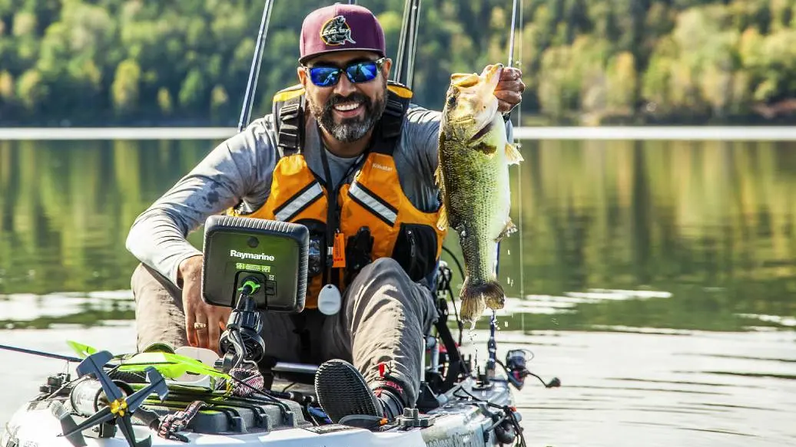
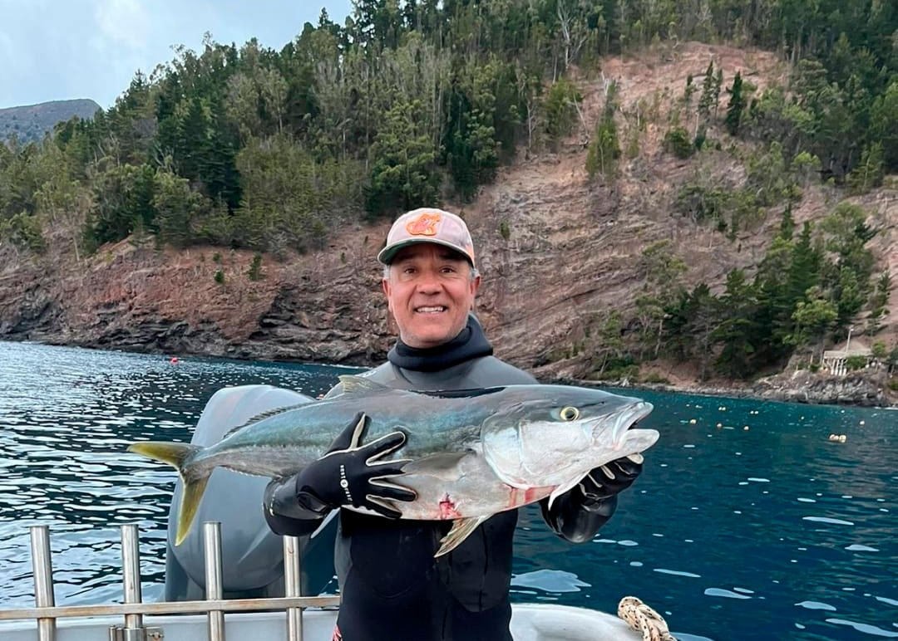
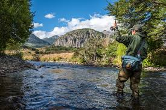
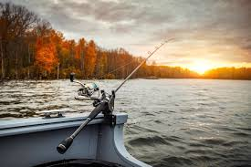
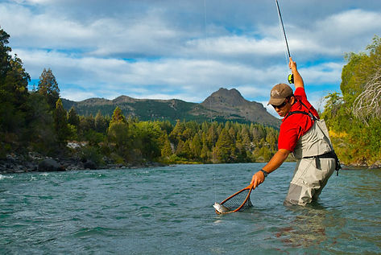

Nivel de dificultad: Medio
Pesca de salmón y trucha rodeado de paisajes impresionantes.
Ver en Google Maps
Nivel de dificultad: Avanzado
Uno de los ríos más caudalosos, ideal para pescadores expertos.
Ver en Google Maps
Nivel de dificultad: Medio-Alto
Abundante pesca de trucha y salmón con paisajes espectaculares.
Ver en Google Maps
Nivel de dificultad: Bajo-Medio
Perfecto para escapadas rápidas cerca de Santiago.
Ver en Google Maps
Nivel de dificultad: Medio
Un destino imperdible para amantes de la pesca y la naturaleza.
Ver en Google MapsDescubre lo último en pesca deportiva, ríos, técnicas, y noticias destacadas de Biobío, CNN y Google.